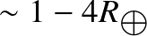
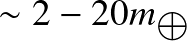
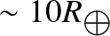
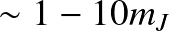
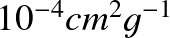
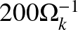
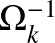

Avoiding run-away gas accretion:
Atmospheric Recycling
Yu Wang
2021/6/4
Super earth or hot jupiter?
Super earth or hot jupiter?
Super earths
radii:

Mass:

Gas-to-core mass ratio:
Super earth or hot jupiter?
Super earths
radii:
Mass:
Gas-to-core mass ratio:
Hot Jupiters


Gas Giants
runaway gas accretion
when the mass of atmosphere is comparable to the core, runaway gas accretion happens. (When the self-gravity of gas becomes important).
Also, core mass should be
, which lies in the mass region of super earths.
runaway gas accretion
runaway gas accretion
has aleady formed
makes Jupiters
mini-Neptune
Ubiquity of super earths around sun-like stars
Ubiquity of super earths around sun-like stars
Ubiquity of super earths around sun-like stars
Ubiquity of super earths around sun-like stars
Super earths are much more common than Hot jupiters,
how they avoid runaway gas accretion?
Possible mechanism
- Late-stage core formation
Final assembly happens when there is few gas left.
gas friction delay the giant impact of proto-plantes (Lee & Chiang 2015)
Possible mechanism
- Late-stage core formation
Final assembly happens when there is few gas left.
gas friction delay the giant impact of proto-plantes (Lee & Chiang 2015)
- To cool is to accrete
High opacity atmosphere (Lee et al. 2014)
Stellar tidal heating (Ginzburg & Sari 2017)
Tidally-forced turbulent diffusion (Yu 2017)
Rapid recycling
(Ormel++ 2015b, Kurokawa & Tanigawa 2018, Moldenhauer++ 2021)
Possible mechanism
- Late-stage core formation
Final assembly happens when there is few gas left.
gas friction delay the giant impact of proto-plantes (Lee & Chiang 2015)
- To cool is to accrete
High opacity atmosphere (Lee et al. 2014)
Stellar tidal heating (Ginzburg & Sari 2017)
Tidally-forced turbulent diffusion (Yu 2017)
Rapid recycling
(Ormel++ 2015b, Kurokawa & Tanigawa 2018, Moldenhauer++ 2021)
Possible mechanism
- Late-stage core formation
Final assembly happens when there is few gas left.
gas friction delay the giant impact of proto-plantes (Lee & Chiang 2015)
- To cool is to accrete
High opacity atmosphere (Lee et al. 2014)
Stellar tidal heating (Ginzburg & Sari 2017)
Tidally-forced turbulent diffusion (Yu 2017)
Rapid recycling
(Ormel++ 2015b, Kurokawa & Tanigawa 2018, Moldenhauer++ 2021) - Gap opening
Possible mechanism
- Late-stage core formation
Final assembly happens when there is few gas left.
gas friction delay the giant impact of proto-plantes (Lee & Chiang 2015)
- To cool is to accrete
High opacity atmosphere (Lee et al. 2014)
Stellar tidal heating (Ginzburg & Sari 2017)
Tidally-forced turbulent diffusion (Yu 2017)
Rapid recycling
(Ormel++ 2015b, Kurokawa & Tanigawa 2018, Moldenhauer++ 2021) - Gap opening
classical model
In classical model, the envelope of the low-mass planet is in pressure equilibrium with the disk gas ("fluffy atmosphere").
In evolution calculations, the atmosphere is assumed to be hydrodynamically isolated from its surroundings.
classical model
In classical model, the envelope of the low-mass planet is in pressure equilibrium with the disk gas ("fluffy atmosphere").
In evolution calculations, the atmosphere is assumed to be hydrodynamically isolated from its surroundings.
That's not true
recycled gas in circumplanetary disk
 at 1 AU, Isothermal
at 1 AU, Isothermal
gas inside the disk reach deeply the core, continuously exchanging materials with the envelop.
recycled gas in circumplanetary disk
gas enters the Bondi sphere at high latitudes and leaves through the midplane regions.
recycled gas in circumplanetary disk
The energy loss by radiative cooling is compensated by the recycling of the low entropy gas in the planetary envelop with high entropy gas from the circumstellar disk.
To heat is to not accrete ;).efficacy of recycling
Recycling efficiency is largely affected by the thermal structure of envelop.
: cooling timescale

Adiabatic:
efficacy of recycling
In non-isothermal cases, an inner bound appears where flows inside
circle round the planet and streamline is closed and do not recycle
effciently.
Why do different cooling timescales affect the pattern?
efficacy of recycling
buoyancy barrier
No buoyancy barrier in isothermal and adiabatic cases.
efficacy of recycling
The positive entropy gradient inhibits the descending gas from reaching deeper regions in the envelope in the non-isothermal cases.
In isothermal cases, temperature of the descending gas is immediately equilibriated with surroundings. No density difference so no bouyancy force.
In adiabatic cases, the entropy keeps the same.
efficacy of recycling
Bouyancy barrier suppress the atmospheric recycling, which means runaway gas accretion can still happen with further cooling.
They simply use cooling here, but in reality the cooling rate varies in different radial position. More sophisticated radiative-transfer calculations are needed.
Steady state with RHD: complete recycling
Settings
Core mass: 1 earth mass
Distance: 0.1 AU
Opacity:

RHD simulation with PLUTO
Moldenhauer++ 2021
Steady state with RHD: complete recycling
Result
Quickly reach the steady state after  . (Entropy profile stays the same.)
Final mass ratio inside the Hill radius is 2.76%, typical for super earths.
Steady state with RHD: complete recycling
recycling time
They launch test particles at different positions to show how long it would take to recycle.
Except few particles near the core,
is all finite and around 100

Steady state with RHD: complete recycling
Eventually 99.85% gas is recycled.
A High efficacy of recycling!
Other interesting questions
- Parameter investigation. Like planet mass, location, disk headwind.
(Kurokawa & Tanigawa 2018)
- how dust couple with gas recycling and influnce opacity/ accretion rate?.
(Popovas++ 2021)
- They recycling efficacy of other compositons? Like water?
(Johansen++ 2021)
- To further investigate the thermal structure. e.g. Vapor planet.
(Ormel++ 2021);
END
TRAPPIST-1e, exoplantes.nasa.gov